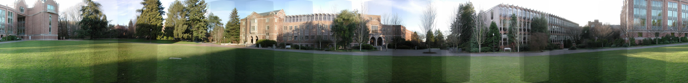
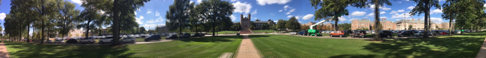
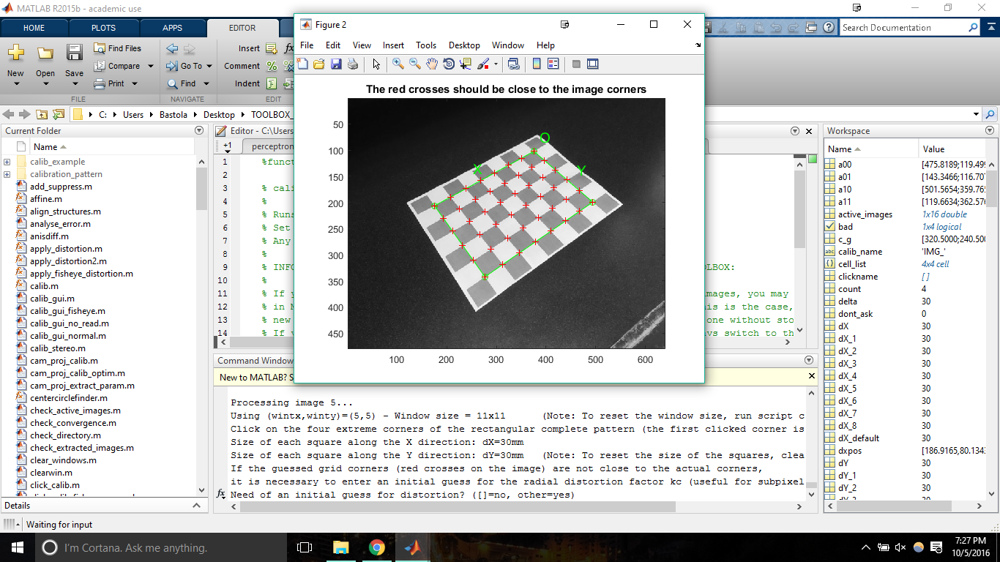
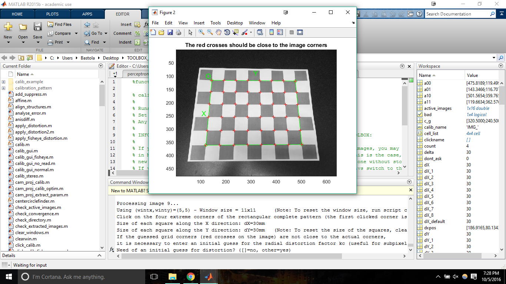
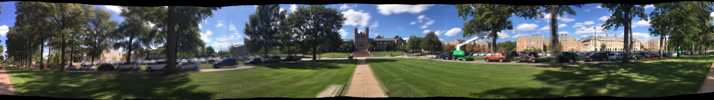
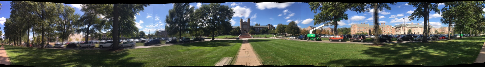

Project2: Panorama Mosiac Stitching
What I did:
- For "make your own 360 panorama" I took 17 translated images of WashU's Brookings building with Iphone SE using hand (no tripod). I converted the images to low (640x480) pixel using imageMagick's convert tool.
- Initially found (in mm) = 4.2mm using image's exif data. Then found f (in pixels) = 640*4.2mm/4.8mm = 560 pixels where 4.8mm was the Iphone SE's camera sensor width and 640 was the width of each down-sampled image
- Used SIFT feature detector and Features matchSiftFeatures to detect and match features.
-
In ToDO #2 in BlendImages.cpp where we were supposed to align images seamlessly, I tried multiple variants of total width of the final image and the x-translation to get good seamlessness in both x initial and x final positions. To me, final width = mshape.width - 0.7* width and translation x = 0.425*x_0 worked in all test images( instead of width = mshape.width - width and translation x = 0.5*x_0 which cutoff important portions and the final planogram did not seem seamless in x_initial and x_final pixels) .
What worked well:
- Blending, feature matching(with SIFT), final y-translations in first and last-image
cropping bad pixels(Extra credit)
What did not work well:
- Feature matching with project 1 feature matcher.
- Hand held iphone images for Brookings had slight ghosting effects due to hand movements in 3d y direction.
- The radial distortion parameters (extra credit) came out to be close to zero.
The following are results.
Campus

High resolution
Brookings

High resolution
Extra Credit 1: Radial distortion correction
I integrated Matlab with Camera Calibraiton Toolbox and found estimates for the radial distortion parameters.


The 16 images of checkerboards different orientations were analysed like above. The images were taken via same iphone I used to take panorama of brookings. The main results is as follows:
Focal Length: fc = [ 548.71738 550.86964 ] +/- [ 3.50693 3.31368 ]
Distortion: kc = [ 0.08898 -0.11683 -0.00534 -0.00085 0.00000 ] +/- [ 0.01014 0.04018 0.00105 0.00131 0.00000 ]
Notice that my f (in pixels) closely matches the fc above. I used average fc = 557 pixels for distortion correction.

Non Corrected
High resolution
VS

Radial Distoriton Corrected
High resolution
Since my k1 and k2 came out to be low i.e. 0.08898 and -0.11683 respectively, the values had much less impact on the overall performace of the panorama. The panorama due to radial distortion correction is only slightly better (please notice the right flag above the brookings main building on both images).
Extra Credit 2: Automatic cropping of bad edge pixels
Added new function cropBlackEdges that takes in the output of warpGlobal and crops the bad edges from the final output image. The algorithm finds the min_y and max_y position for the black pixels and crops the image accordingly.
{kind=link}
{kind=link}
{kind=link}
{kind=link}
{kind=link}
{kind=link}